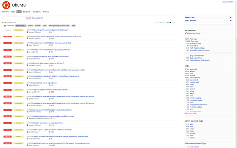
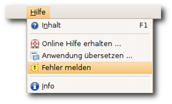

Fehler melden
Dieser Artikel wurde für die folgenden Ubuntu-Versionen getestet:
Dieser Artikel ist größtenteils für alle Ubuntu-Versionen gültig.
Zum Verständnis dieses Artikels sind folgende Seiten hilfreich:
 Keine Software der Welt ist ohne Fehler. Programmfehler (üblicherweise Bugs genannt) schleichen sich in alle Softwareprodukte ein. Der Unterschied in der Handhabung von Fehlern in Open Source Produkten wie Linux zu kommerziellen Produkten, die hinter verschlossenen Türen gebaut werden, ist, dass Fehler öffentlich gehandhabt werden.
Keine Software der Welt ist ohne Fehler. Programmfehler (üblicherweise Bugs genannt) schleichen sich in alle Softwareprodukte ein. Der Unterschied in der Handhabung von Fehlern in Open Source Produkten wie Linux zu kommerziellen Produkten, die hinter verschlossenen Türen gebaut werden, ist, dass Fehler öffentlich gehandhabt werden.
Jeder kann also sehen welche Fehler bekannt sind, jeder kann sehen welche Fehler gemeldet sind, jeder kann bei der Behebung von Fehlern teilhaben und jeder kann Fehler melden. Letztgenanntes soll hier beschrieben werden, so dass man Fehler in Ubuntu so melden kann, dass Entwickler und Paketbetreuer aus den Fehlermeldungen, schnell die Probleme erkennen und beheben können.
Hinweis: Dieser Artikel bezieht sich weitgehend und grundlegend auf Ubuntu. Kubuntu / KDE direkt wird explizit im Wiki von kubuntu-de.org behandelt.
|  |
| Launchpad |
Launchpad¶
Ubuntu nutzt Launchpad als Plattform zum Fehlermanagement. Dort werden Fehler gemeldet, die Bugs diskutiert, unter anderem Patches eingebracht und schließlich die Lösung bekannt gegeben. Um Bugs melden zu können, muss man sich zuerst registrieren. Die Registrierung ist kostenlos und verpflichtet zu nichts. Allerdings ist eine Voraussetzung die Cookie-Annahme für launchpad.net und openid.net, sonst bekommt man immer nur eine schlecht übersetzte Fehlermeldungs-Seite zu sehen.
Weitere Informationen findet man im Artikel Launchpad bzw. Ubuntu Touch/Launchpad.
Wann soll man einen Bug melden?¶
Nicht alles, was nach einem Bug aussieht, ist ein Bug. Man sollte nur einen Bug-Report erstellen, wenn
der Fehler reproduzierbar ist.
es keine gewollte Funktion des Programms ist.
Kann man den Fehler nicht reproduzieren, so kann man den Bug als Entwickler auch nicht nachvollziehen. Dies ist jedoch nötig, um ihn auch beheben zu können. Des Weiteren ist manch ein Verhalten gewollt, man sollte also erst einmal mit Anderen (eventuell aus dem Forum) besprechen, ob das Verhalten nun ein Bug ist, oder ein Feature, das man nicht verstanden hat.
Wann sollte man sich nicht an Launchpad wenden?¶
Launchpad ist nicht die einzige Kommunikationsplattforum rund um Ubuntu. Für Hilfsanfragen oder direkte Fragen an die Entwickler gibt es bessere Anlaufstellen.
Fehler in Programmen sollten direkt beim entsprechendem Projekt ("upstream") gemeldet werden. Hier sollte sich vorher vergewissert werden, ob das Problem nicht bereits behoben wurde und in der genutzten Ubuntu-Version noch eine alte Version mit dem Fehler geführt wird. Wurde der Fehler im Upstream-Projekt behoben, aber ist das Programm in der aktuellen Ubuntu-Entwicklungsversion noch nicht aktualisiert, sollte auf Launchpad ein Bug mit Bitte um Aktualisierung erstellt werden. Falls es sich um ein schwerwiegendes Problem handelt, das bereits im Upstream-Projekt behoben wurde und auch in der aktuellen Ubuntu-Entwicklungsversion nicht mehr auftritt, sollte trotzdem nach einer Aktualisierung für die genutzte Ubuntu-Version gebeten werden.
Der Bugtracker auf launchpad.net ist kein Hilfsforum. Kommt man mit Ubuntu nicht zurecht, so ist dies kein Fehler im Programm. Benötigt man Hilfe, so sollte man sich an das Forum von ubuntuusers.de
 , das internationale Ubuntu-Forum auf ubuntuforums.org
, das internationale Ubuntu-Forum auf ubuntuforums.org  oder an Answers auf Launchpad wenden, wo man auch Fragen auf Deutsch stellen kann.
oder an Answers auf Launchpad wenden, wo man auch Fragen auf Deutsch stellen kann. Funktionen und Grundsatzentscheidungen werden ebenfalls nicht auf Launchpad diskutiert, hierfür gibt es die ubuntu-devel
Mailingliste. Entwickler mit Ideen zu Ubuntu können sich ebenfalls an die ubuntu-devel
Mailingliste wenden.
Paket bestimmen¶
Jeder Bug muss dem Paket zugeordnet werden, das den Fehler hervorruft. Doch wie findet man das passende Paket? Das relevante Paket ist bei Anwendungen leicht zu bestimmen. Tritt ein Fehler beispielsweise im Bildbearbeitungsprogramm GIMP auf, so nennt sich das passende Paket natürlich "gimp".
Bei Fehlern im Kernel oder der Live-CD wird es jedoch schwieriger das passende Paket zu bestimmen. Generell muss man jedoch betonen, dass es nicht so wichtig ist, das passende Paket zu treffen. Hat man ein falsches Paket gewählt, so wird der Fehler meist recht schnell von anderen Launchpad-Benutzern korrigiert. Weitere Informationen hierzu findet man im Wiki unter Paket finden.
Einen Bug melden¶
Vor der Bug-Meldung¶
Bevor man sich nun heran macht und einen Bug meldet, den man entdeckt hat, so sollte man auf launchpad.net suchen und sich vergewissern, dass der Bug noch nicht gemeldet wurde. Gute Suchbegriffe sind Schlüsselworte aus Fehlermeldungen oder Logdateien. Offizielle Release-Notes mit bekannten Fehler findet man z.B. unter:
Falls man nun einen Bug gefunden hat, so sollte man unbedingt überprüfen, ob er noch in der aktuellen Ubuntu-Version enthalten ist. Ist dies auch geschehen, so kann man sich daran machen, den Bug zu melden.
Bug in Launchpad eintragen¶

Viele Anwendungen besitzen im Menü unter
"Hilfe -> Fehler melden"
eine Funktion um direkt aus der Anwendung heraus einen Bug zu erzeugen. Dabei werden gleich wichtige Informationen über das System und die Anwendung gesammelt und der Eintrag auf launchpad.net beim richtigen Paket vorbereitet. Bietet die fehlerhafte Anwendung solch einen Eintrag, so sollte man ihn auch benutzen.
Alternativ kann man natürlich direkt über Launchpad den Bug eintragen und das betroffene Paket von Hand auswählen. Falls man das Paket nicht sofort ausfindig machen kann, so findet man unter Paket finden im Wiki weitere Informationen.
Hier füllt man die Beschreibung so gut wie möglich aus. Dabei sollte man auf jeden Fall die genutzte Ubuntu-Version, die Version des betroffenen Programms und Informationen um den Bug reproduzieren zu können angegeben werden. Prinzipiell kann man hier gar nicht zu viele Informationen liefern. Kann man das Problem schwer beschreiben so helfen Bildschirmfotos und Screencasts ein komplexes Problem zu verdeutlichen. Hat man alles ausgefüllt, so schickt man den Bug mittels "Submit Bug Report" ab.
Screenshots oder andere Anhänge lassen sich nicht sofort an den Bug hängen. Dies geht erst nachdem man den Bug mittels "Submit Bug Report" erzeugt hat, erst dann lassen sich Daten anhängen. Alle anderen Felder kann man so lassen wie sie sind. Die verantwortlichen Paketbetreuer kümmern sich üblicherweise in der Einstufung der Relevanz des Bugs usw. Nun hat man seine Pflicht getan, der Bug ist gemeldet.
Noch ein paar Tipps:
Bitte immer nur einen Fehler pro Bug-Report melden
Sollte man trotz Paket finden nicht wissen, zu welchem Paket man den Bug melden soll, so kann man den Bug auch gegen "Ubuntu" melden. Allerdings kann es so eine Weile dauern, bis auf den Bug eingegangen wird.
Für Bugs in denen Hardware involviert ist sollten die mittels
lspci -vv > ~/lspci-vv.log lspci -vvn > ~/lspci-vvn.log dmesg > ~/dmesg.log
im Homeverzeichnis angelegten Dateien an die Bugmeldungen angehängt werden.
Wenn ein Programm abgestürzt ist und einen "Crash-Report" erzeugt hat, so bringt dieser leider nichts, wenn die Debug-Pakete nicht installiert waren. Nach einem reproduzierbaren Crash sollte man also zuerst das passende -dbg Paket installieren. Danach kann man den Crash reproduzieren und diesen Crash-Report melden.
Hinweis:
Sollte man nicht wissen, wie das passende -dbg Paket heißt, so kann man über die Ubuntu Packages Search
nach dem eigentlichen Paket suchen. Wählt man nun das Paket für die eingesetzte Ubuntu Version, so wird auf dieser Seite ein Link zum "Quellcode-Paket" angezeigt. Diese Seite listet alle aus dem Quellcode-Paket erzeugten Pakete einschließlich dem -dbg Paket.
Bei Fehlern, die die graphische Ausgabe betreffen, fragen die Entwickler oft nach der Konfigurationsdatei /etc/X11/xorg.conf und der Logdatei /var/log/Xorg.0.log des Xservers. Diese kann man also schon gleich nach der Bugmeldung anhängen.
Bei Fehlern, die gegen einen Kernel gemeldet werden, müssen die durch die Befehle
uname -a > ~/uname-a.log cat /proc/version_signature > ~/version.log dmesg > ~/dmesg.log sudo lspci -vvnn > ~/lspci-vvnn.log
im Homeverzeichnis generierten Dateien an die Bugmeldungen angehängt werden. Weitere Informationen hierzu findet man in den KernelTeam Bug Policies.
Bugs direkt über das Terminal melden¶
Es ist möglich, Bugs über ein Terminal-Fenster melden. Dazu muss man entweder den Paketnamen des betroffenen Programms oder die Prozess-ID (PID; siehe auch Prozesse) kennen. Der Vorteil beider Methoden gegenüber einer manuell auf Launchpad geschriebenen Fehlermeldung ist, dass eine Reihe von relevanten Daten an die Fehlermeldung automatisch angehängt werden. So wird der Bugreport für die Entwickler deutlich wertvoller und Rückfragen werden vermieden:
ubuntu-bug PACKAGE
bzw.
ubuntu-bug PID
Fehlermeldungen auf Englisch¶
Nutzt man ein lokalisiertes Ubuntu-System, also Ubuntu auf Deutsch, so sind auch Fehlermeldungen und Ausgaben auf Deutsch. Da Ubuntu bzw. Linux jedoch ein globales Projekt ist, sind Fehlermeldungen auf Deutsch nicht sinnvoll. Man sollte daher Berichte und Meldungen auf Englisch erzeugen.
Um nicht extra die Sprache des System ändern zu müssen, kann man jedes Programm und jeden Befehl mit einem "LC_ALL=C" davor über ein Terminal [1] ausführen. So wird das Programm auf Englisch gestartet und alle Ausgaben erfolgen ebenso auf Englisch
# Allgemein LC_ALL=C BEFEHL #Beispiel LC_ALL=C ubuntu-bug gdm
Apport¶
Zum Melden von Fehlern kann man auch ein Spezialprogramm verwenden, das von Canonical , der Firma hinter Ubuntu, entwickelte wurde und inzwischen vorinstalliert ist. Weitere Informationen findet man im Artikel zu Apport.
Andere Bugtracker¶
Nicht jedes Projekt ist bei Launchpad gehostet und nicht jeder Paketbetreuer hat die Zeit, in Launchpad berichtete Bugs an die eigentlichen Entwickler weiterzuleiten. Zudem kann er keine Rückfragen der Entwickler direkt beantworten. Auf den Projektseiten von Programmen oder in der Dokumentation, beispielsweise auf der Manpage findet man in der Regel Hinweise, wo Fehler direkt an die Entwickler gemeldet werden können.
Dies können Mailinglisten sein, aber auch andere Bugtracking-Systeme: Der Bugtracker von SourceForge oder Bugzilla , der Bugtracker aus dem Mozilla-Projekt. Manche kleinere Projekte nutzen auch ein Forum oder ein Wiki zum Berichten von Fehlern. Eine andere Möglichkeit, die weitere Verbreitung gefunden hat, sind Projektverwaltungen wie Trac oder Redmine, in der so genannte Tickets unter anderem für Fehlermeldungen genutzt werden können.
Links¶
Intern¶
Launchpad – Webbasierte Softwareentwicklungsplattform für Ubuntu und weitere Projekte
Paket finden – ein Bug dem Paket zuordnen, welches den Fehler hervorruft
Valgrind – ein Debugging und Profiling-Programm (z.B. zum Aufsuchen von Speicherlecks (memory leaks))
GDB – Debugger, um z.B. Variablen auszulesen und ein Backtrace zu bekommen
Extern¶
Fehlerberichte – wie Sie Softwarefehler melden sollten
- aus der Sicht eines BerufsprogrammierersJono Bacon: Filing a bug in Ubuntu
– Video-Tutorial, 02/2012 KDE bugtracking-System
– Fehlerdatenbank mit Suche (integrierbar in Browsersuchfeld)Fehler_melden
- für Kubuntu/KDE auf kubuntu-de.org
- Erstellt mit Inyoka
-
 2004 – 2017 ubuntuusers.de • Einige Rechte vorbehalten
2004 – 2017 ubuntuusers.de • Einige Rechte vorbehalten
Lizenz • Kontakt • Datenschutz • Impressum • Serverstatus -
Serverhousing gespendet von